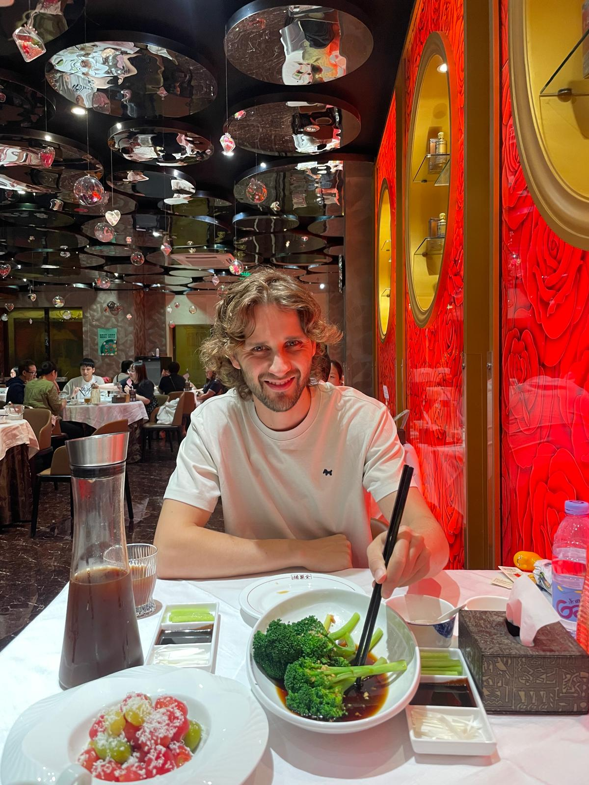
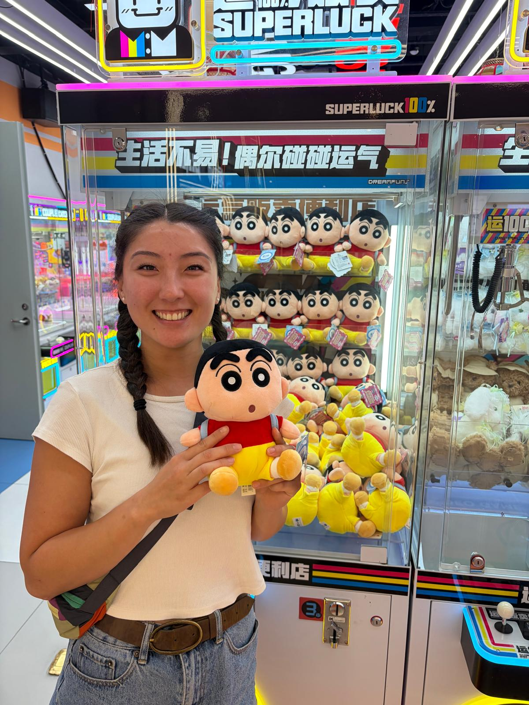
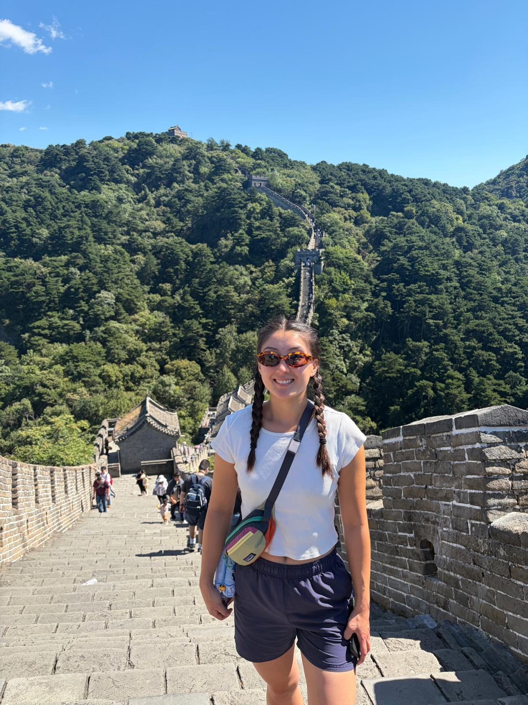
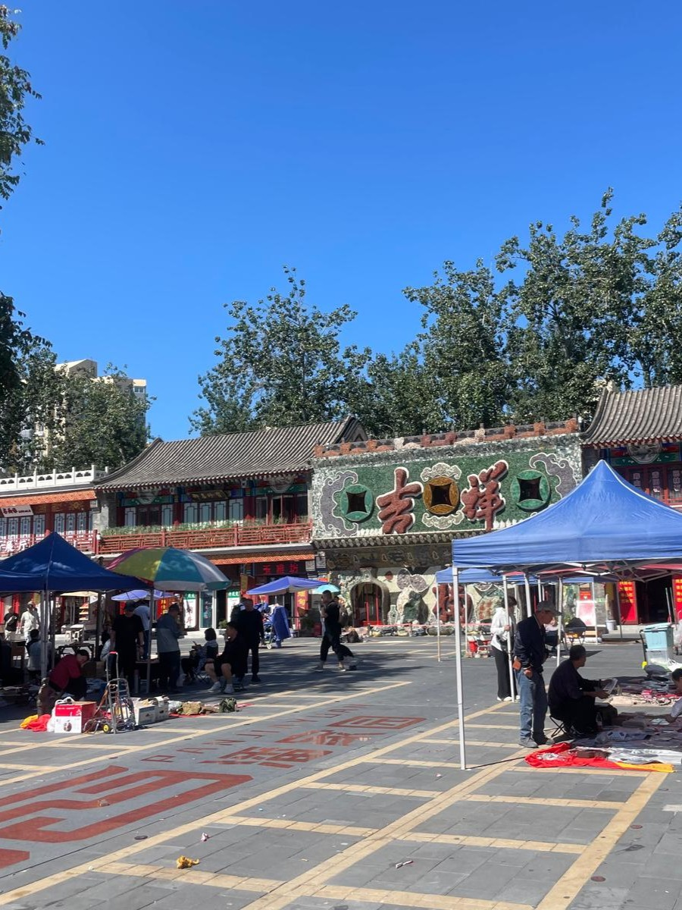

← Travel
Beijing 2026
Our high speed overnight train jounrey was not so pretty but we were finally in the nations capital, Beijing!

11th September 2026
We arrived in Beijing in a bit of a state after not much sleep. But we had a hankering for peking duck and we for sure satisfied that craving. The Peking Duck was beyond my imagination, the flavour of the duck combined into the rice paper rolls was amazing.

12th September 2026
After some bouts of stomach troubles we were ready for a historical tour of Beijing. We went to Tiananmen Square, where the picture of Mao Zedong stared into our souls at the entrance. We navigated through the Forgotten City, astounded by the outdated traditions. We went to Jingshan Park to watch the sunset over the city and ended the day by goin to an arcade where we won THREE plush toys. Our lock was HIGH!

13th September 2026
It was our time to visit the Great Wall of China! We took a DiDi very far North to Mutianyu. We caught the chairlift up to the top and walked along in the heat of the day. Surprisingly the wall was in really great condition and the way it snaked through the rolling hills was impressive. How did they bring all the stones up to the hills? It really is a mystery. On the way down we caught the chairlift and then treated ourselves to some more delicious Peking Duck!

13th September 2026
On our last day in Beijing we went to a famous market where we bought some clay pots to make tea before we needed to head to our high speed train back to Shanghai. We had learned from our previous experience and switched our overnight train to a high speed train...